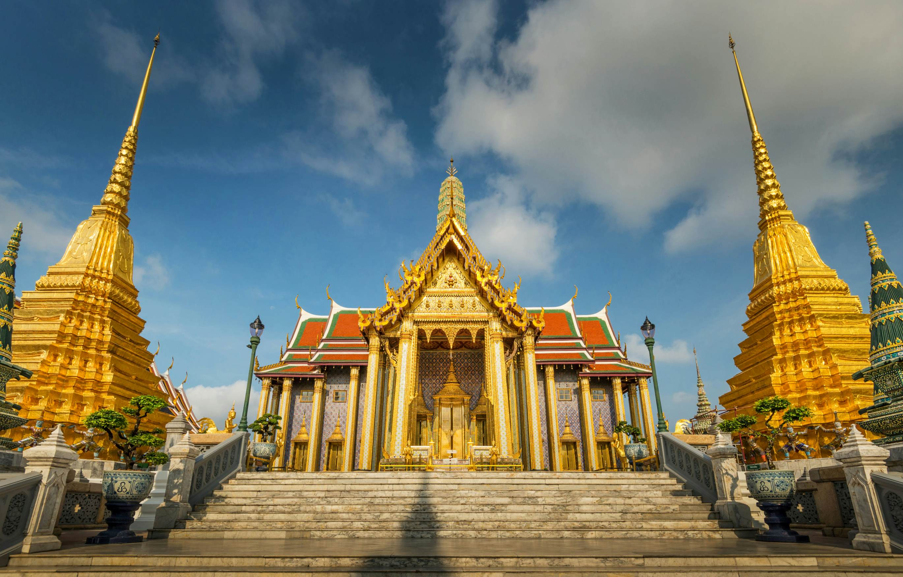
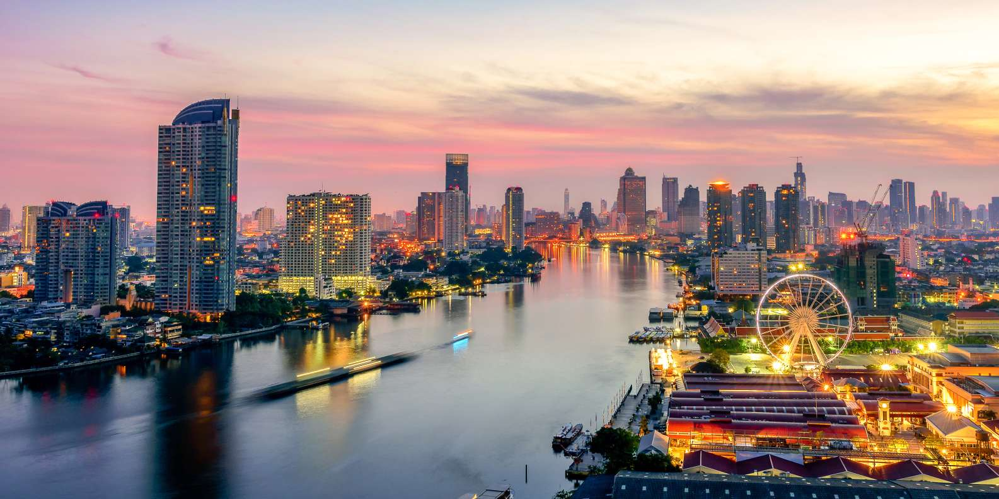
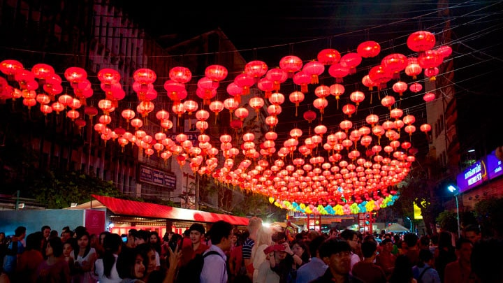

THE GRAND PALACE
Bangkok’ta görülecek yerler listesinin olmazsa olmazı, şehrin en ünlü simgelerinden biri olan büyüleyici Büyük Saray. 1782 tarihli bu ihtişamlı saray kompleksi, yaklaşık 150 yıl Tayland kraliyetine, kraliyet mahkemesine ve hükümetine ev sahipliği yapmış. Saray, halen daha içindeki savaş bakanlığı ve devlet daireleriyle Tayland Krallığı’nın sembolik kalbi olmaya devam ediyor. Büyük Saray’ın mimarisi ve özellikle de işçilikteki detay akıllara zarar. Gerçekten de Tayland halkının yaratıcılığı ve süsleme sanatındaki ustalığı görülmeye değer.

WAT ARUN
Wat Arun Ratchawararam Ratchawaramahawihan ya da Wat Arun Bangkok'un Bangkok Yai bölgesinde, Thonburi batısındaki Chao Phraya Nehri'nin kıyısında yer alan bir Budist tapınağı. Tapınak, adını Hindu tanrısı Aruna'dan alır. Wat Arun, Tayland'ın en ünlü yerlerinden biridir ve sabahın ilk ışığı, tapınağın sarmal kubbesinden yansımaktadır. Tapınak en az on yedinci yüzyıldan beri var olmasına rağmen, onun ayırt edici kubbesi Kral Rama II'nin saltanatı döneminde, on dokuzuncu yüzyılın başlarında inşa edilmiştir.

WAT PHARA KAEW
Zümrüt Tapınağı olarak bilinen Wat Phra Kaew, Bangkok’un Eski Şehir bölgesinde Büyük Saray’ın içinde yer almaktadır. Tapınak; iç, orta ve dış avlu şeklinde 3 bölüme ayrılmaktadır. Yalnızca Bangkok’un değil Tayland’ın da en büyük tapınakları arasında yer alan Wat Phra Kaew, içerisinde ziyaretçilerini tüm ihtişamı ile karşılayan ve ince işçilikle oyulmuş “Zümrüt Buda Heykeli” bulunmaktadır. Tapınak, adını zümrütten yapılmış olan bu heykelden almaktadır.

WAT PHO
Wat Pho (Yatan Buda Tapınağı) veya diğer adıyla Wat Phra Chetuphon Tapınağı, Bangkok Buddha Tapınağı’nın hemen arkasında yer alan ve Bangkok’a gelen her gezginin ilk görmesi gereken yerlerden biri. Burası hem Bangkok’un en büyük tapınaklarından hem de altın varak kaplı 46 metre uzunluğundaki dev Buddha heykeli ile de dünyanın en ünlülerinden. Kraliyet sarayına 10 dakikalık yürüyüş mesafesinde olan tapınak için önerimiz sadece dev heykelle sınırlı kalmayıp tüm kompleksi baştan aşağı gezmeniz. Burada aynı zamanda geleneksel Tayland masajı da yaptırabiliyorsunuz.

CHAO PRAYA
Bangkok, şehre ve ülkeye hayat veren önemli nehir Chao Praya’nın Tayland körfezine dökülmeden suladığı son noktadır. Okunuşu Çao Praya olan nehir, Biri Myanmar sınırında, diğeri Laos sınırında başlayan Ping ve Nan nehirlerinin, Tayland içinden onlara katılan nispeten daha cılız bir kaç nehirle birleşmesi sonucu oluşur. Yaklaşık 140 bin kilometrelik bir alana yaşam sağlar. 372 kilometrelik uzunluğu ile sadece ülkede doğup ülkede denize dökülen tek nehirdir.

CHİNATOWN
Bangkok’un Çin Mahallesi (China Town) hem popüler bir turistik nokta hem de ağzının tadını bilenler için alternatif lezzetler cenneti. Charoenkrung Yoluna bitişik bu 1 km’lik şeridin gecesi de gündüzü de oldukça haraketli. Bölgede aynı zamanda alışveriş meraklılarının değişik ürünler bulabileceği ve tarih meraklıları için de gezebilecekleri Çin tapınakları var.